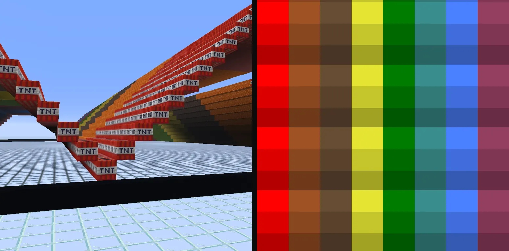
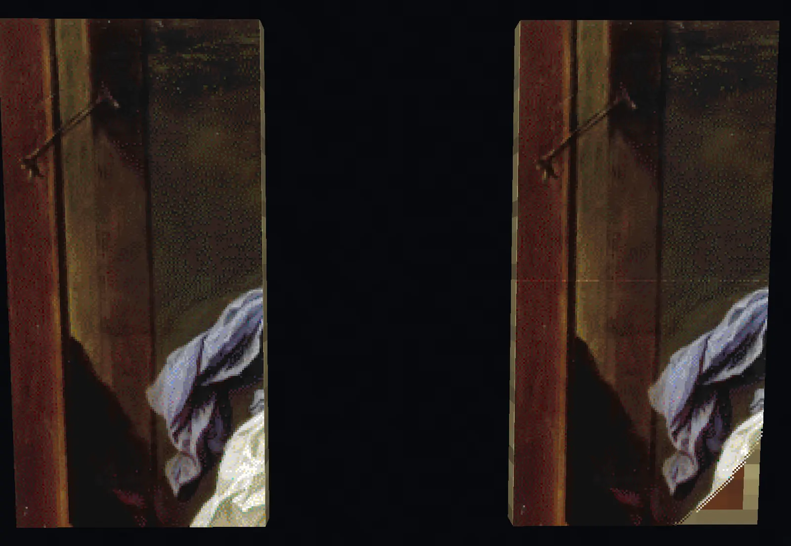
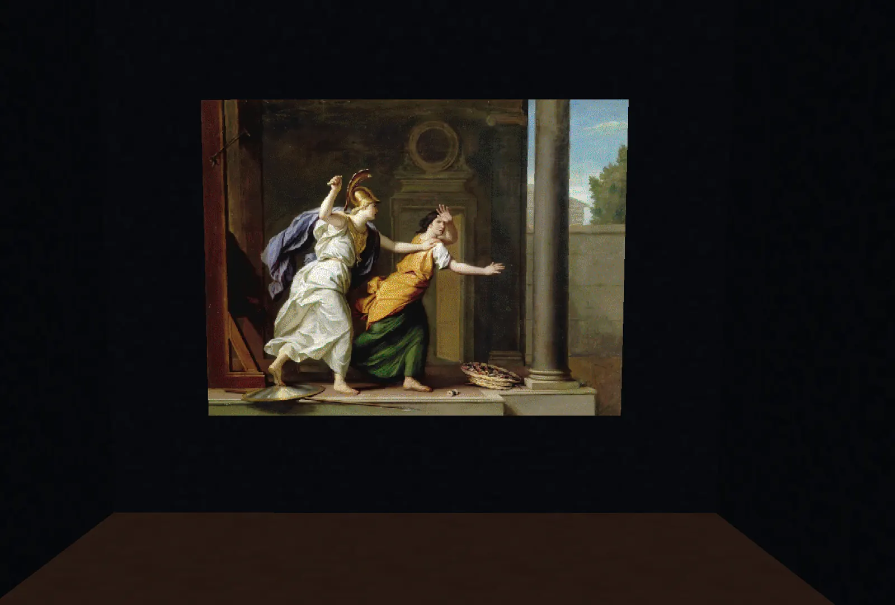
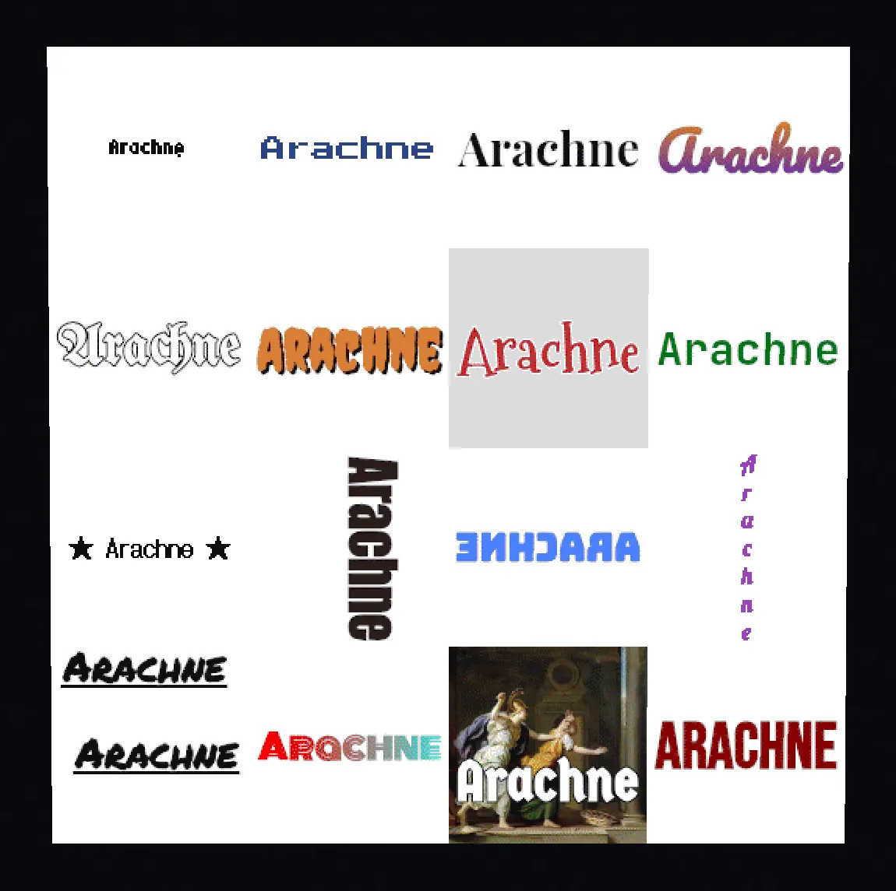

Minecraft map art questions and answers
What people ask before and after a first build.
- Is it free, and does my picture leave my browser?
- Why does it say beta?
- Why is it called Arachne?
- Which Minecraft versions does it cover, and what happens when a new one ships?
- Does it work on a phone, and what about Bedrock?
- Why does a staircased map have three shades and a flat map one?
- What is the noobline, and why is the plan one row taller than my picture?
- Why does the top row of my map read too bright?
- How tall does a staircased build get, and how do I limit it?
- Where does a map start and end?
- Why does a block come already picked for every color when I open Arachne?
- Why does a color place nothing?
- Can I import my mapartcraft palette?
- Can I share a palette with a friend?
- Which file do I download, .litematic or .nbt?
- What do separate panels, continued panels and one piece mean?
- Why did a panel get no file?
- What is the map data file for?
- Can I put text on my map?
- Can I use water?
- Is the source open, and can I contribute?
Is it free, and does my picture leave my browser?
Free, with no account, no ads, and no limits on size or downloads. The picture never leaves your browser. Everything from color matching to the schematic file is computed on your own machine, and the site has no backend to send anything to. There is no analytics and no tracking of any kind, and the web server keeps only the ordinary request log every website keeps. Your presets and settings live in your browser's own storage, so clearing site data clears them, which is what export my settings in Import / export is for. The source is under the GPL, and the footer of the app links the source of the exact build you are running.
Why does it say beta?
The math is tested and the output has been verified in game, block for block. What remains rough is cosmetic, and the release notes show what changes from build to build.
Why is it called Arachne?
Arachne is the weaver of the Greek story, so skilled at the loom that she challenged a goddess and was turned into a spider for it. A map art build is a weave too, one block per thread across a fixed frame, and the spider on the icon and the web on the map seal are hers.
Which Minecraft versions does it cover, and what happens when a new one ships?
Every Java release from 1.13 to the newest, and you pick the one you play under game version in Palette. The palette, the blocks on offer, and the data version written into your files all follow that pick, so a block that arrived after your version is never offered to you. A file made for an older version still loads in a newer game, since the game upgrades old data on the way in. When a new Minecraft release ships, Arachne's block data is regenerated from the new game files and goes out as a new build, and the release notes say so. Until then, pick the newest version listed.
Does it work on a phone, and what about Bedrock?
Arachne fits a phone, installs to the home screen as an app, and keeps working offline after the first visit. The files it makes are Java Edition files. Bedrock uses different formats and Arachne does not claim to support it, though viewing a build and reading the build sheet work on any device.
Why does a staircased map have three shades and a flat map one?
The game paints a block by its map color and by its height against the block directly north of it. The same block reads light when it stands higher, normal when it stands level, and dark when it stands lower. A flat map has no height differences, so every block reads its normal shade and the palette is the plain set of map colors. A staircased map steps blocks up and down along each column to reach the light and dark shades on purpose, which roughly triples the palette at the cost of a taller, hillier build. Arachne works out the heights for you and keeps every step as low as it can. You choose between the two under height in Source, and the colors page shows all three shades of every color.

What is the noobline, and why is the plan one row taller than my picture?
A map shades every block by comparing its height with the block directly north of it, and the first row of your picture has nothing north of it to compare against. Left alone, that whole row renders a shade brighter than the plan intended, which shows as a line across the top of every map. The noobline is a reference row placed along the north edge, one block for every column, that gives the first row something to stand against. Every schematic and materials list from Arachne includes it, so the plan is always one row taller than the picture. The row itself sits just outside the map and never shows on it.

Why does the top row of my map read too bright?
The reference row is missing or stands at the wrong height. The game reads the first row against whatever is north of it, and with open air there every block in that row reads light. Build the noobline the schematic includes, at the height it gives, and the top row falls into place. If the map is already built, adding the row afterwards fixes it the next time the map updates.
How tall does a staircased build get, and how do I limit it?
Each light shade sits one block above the block north of it and each dark shade one block below, so a long run of light shades climbs, and a picture with wide bright areas can want a hundred blocks or more. Two settings under height hold it down. max step limits how far any single row may rise or fall against the row before it, and a max step of one gives you gentle terraces. max height caps the whole build. Arachne recolors the fewest blocks it can to fit under the cap and reports the cost right under the setting as a percent more color error than the uncapped picture. Most pictures give up very little. A sky that wants to climb a hundred blocks usually fits under twenty for a few percent more error.
Where does a map start and end?
Maps do not center on the player. The world is cut into a fixed grid of squares 128 blocks on a side, and a new map shows whichever square it was first used in. The grid is offset from the world origin by 64 blocks, so every map edge falls on an x or z coordinate of 64 plus a multiple of 128, and two maps of the same size never overlap. Find the northwest corner of the square you want and build the schematic so its picture starts on that corner, with the noobline row one block north of it. The F3 screen shows your coordinates, and F3 together with G draws chunk borders, which help because every map edge is also a chunk border.
Why does a block come already picked for every color when I open Arachne?
Every block offered for a color renders the exact same pixel, so the choice only changes what you mine and carry back. Arachne reads the tools in your Loadout and picks the block that costs you the least to break and get back, which is why the palette looks different with a stone pickaxe than with a silk touch netherite one. Click any other block for a color to override the pick, and it stays yours until you change it. Save the palette and the loadout as presets with save…, or export my settings as a file, and the next picture starts from your own setup instead of the defaults.
Why does a color place nothing?
No block for it survives your filters and your loadout together. The heading above the palette counts the colors left with nothing, and the row for such a color says which of your settings emptied it. A color whose only blocks fall without support goes dark the moment you turn off the gravity filter, and a color whose only blocks need silk touch goes dark when no tool in your loadout carries it. Loosen the filter, add the tool, or leave the color off. Pixels that wanted that color are quantized to the nearest color still in play, so the picture does not get holes.
Can I import my mapartcraft palette?
Yes, three ways, all in Import / export. Load the MapartcraftPalette.txt file it exports, paste a mapartcraft link that contains its preset, or paste the preset string on its own, then use it. Colors the palette leaves out are switched off, the same as they are over there, and every block it names becomes your pick for that color where Arachne offers the same block. A block Arachne does not offer is skipped, and the import says how many that was. Imported picks are yours, so changing your loadout afterwards never swaps them behind your back. The same section also loads a settings file exported from Arachne, which carries the loadout and picture settings as well.
Which file do I download, .litematic or .nbt?
Both hold the same build. The .litematic is Litematica's own format and the default. It carries its own name, so it shows under that name in Litematica's schematic list instead of the file name, and its description says it came from Arachne. The .nbt is the game's vanilla structure format, which Litematica also loads and which WorldEdit and structure blocks read. Pick it under schematic in Download when you build with WorldEdit or paste with commands. A build bigger than one map downloads as a zip with one file per panel, either way.
What do separate panels, continued panels and one piece mean?
They decide how a build bigger than one map is cut and what max height measures. Separate panels give one file per map, and every panel starts on the ground with its own reference row along its north edge, so you can build each one anywhere and in any order. Max height is then the tallest single panel. Panels that continue each other also give one file per map, but they keep the heights of the whole picture, and a southern panel stands on the row above it, so paste every panel at the same Y. A southern panel's north row is the row already built above it, so the two line up with nothing to redo. One piece is a single schematic with one reference row for the whole build. The setting is build as, under height next to max height, because the two go together.
Why did a panel get no file?
Nothing in it places a block. A fully transparent corner of the picture, for instance, has no pixels to build, so that panel would be an empty schematic and Arachne leaves it out. The Download section names the panels it skipped. Their map ids stay reserved, so the numbering of every other panel is unchanged and the files still line up with the maps on the wall.
What is the map data file for?
It skips the build. A map data file is the game's own record of a finished map, so dropping it into your world puts the picture straight onto a map item with no blocks placed. That only works where you can write to the world save, which means singleplayer or a server you run. On 26.1 and later the zip holds a minecraft folder that goes inside the world's data folder, so the maps land in data/minecraft/maps. On older versions the map files go straight into the data folder. Then give yourself the map with the command the Download section shows for your version. Set first map id above the highest map your world already has, or the file replaces one of yours. Choose make at the top of Source and pick the map file. In that mode the palette is every color the game knows in all four shades, including the fourth one no block can make, and the block, filler and height settings fold away because nothing is placed.

Can I put text on my map?
Yes. Turn on text on the map in Source, type a line, and drag it on the preview to where it should sit. Every font comes from a set of 142 free faces, listed with samples on the fonts page, and only the ones you pick are downloaded.

Under 20 blocks tall the letters are drawn crisp, one solid map color with hard edges and no dither, which is what reads at sign size. From 20 blocks up they are drawn smooth and dithered like the picture, and letter style overrides that either way. Its third choice, hinted, is for 8 to 19 blocks. The letters are fitted to the block grid ahead of time by the font's own hinting, so they come out the same in every browser. With no picture behind it, the transparency settings decide what the rest of the map becomes, a fill color or nothing at all. The letters cost no more blocks than any other part of the picture.
A line can be turned a quarter or half turn, mirrored, flipped or stacked one letter per line, underlined, and on smooth letters given a two color gradient. Undo and redo sit in the head with the usual keys, and the arrow keys nudge the selected line a block at a time. Letter spacing needs a current browser, Safari from 18.4. The text tool as a whole needs Safari 17 or newer, the same floor as loading a picture, since both draw through an offscreen canvas.
Can I use water?
No. The game shades water by its depth, and each of the three shades needs a different depth, so the darkest blue would take a column of ten water blocks walled in on all four sides under a single pixel, and even the lightest needs a floor and walls of its own. No one builds map art that way, so Arachne does not place fluids. Nothing else on a map makes quite that blue, so a picture that leans on pure blue shifts a little toward the nearest blue the palette has.
Is the source open, and can I contribute?
The source is under GPL-3.0. The footer of the app links an archive of the exact build you are running, and the GitHub mirror carries one commit per published build. Development happens outside the mirror, so a pull request has no branch to merge into, and a patch attached to an issue is read and carried into the next build with credit if it fits.